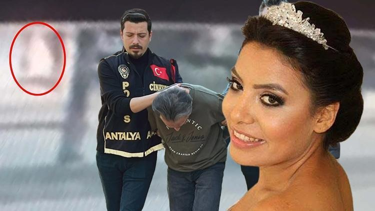
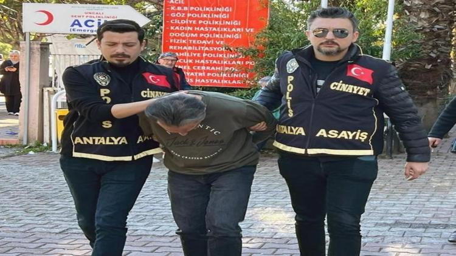

25 Kasım Kadınlara Yönelik Şiddete Karşı Uluslararası Mücadele ve Dayanışma Günü dolayısıyla bir basın açıklaması yayınlayan Kırıkkale Barosu Kadın Hakları Komisyonu, dünyanın birçok ülkesinde ve Türkiye'de kadına yönelik şiddetin ve kadının bedeni, kimliği ve emeği üzerindeki baskının her geçen gün arttığını belirtti.
Muratpaşa ilçesinde eski eşi Gürhan Üzer'in (42) üzerine benzin dökerek yaktığı Pınar Zorlu (36), tedavi gördüğü Antalya Şehir Hastanesinin yoğun bakım ünitesinde yaşamını yitirdi.
Şirinyalı Mahallesi'nde 31 Aralık 2024'te Pınar Zorlu ile eski eşi Gürhan Üzer arasında tartışma çıkmış, tartışmanın büyümesi üzerine Gürhan Üzer, yanında kovayla getirdiği benzini Pınar Zorlu'nun üzerine döküp ateşe vermişti. Alev alan kadına, çevredeki bir esnaf yangın söndürme tüpüyle müdahale etmişti.
Vücudunun büyük bir bölümü yanan kadın hastaneye kaldırılmış, olay yerinden motoruyla uzaklaşan Gürhan Üzer, polis ekiplerince yakalandıktan sonra tutuklanmıştı.
Akdeniz Üniversitesi Hastanesi Yanık Ünitesi'ne kaldırılan kadın, daha sonra Antalya Şehir Hastanesi'ne sevk edilmişti. Vücudunun büyük bölümünde ciddi yanıklar olan kadın, birçok ameliyat geçirmişti.
Tutuklanan Gürhan Üzer Gürhan Üzer, ilk ifadesinde, "Eski eşim boşandıktan sonra tavırları değişti. Bana çocuğumu göstermiyordu. Bundan dolayı da bugün sabah çalıştığı iş yerinin oraya gittim. Gitmeden önce de akaryakıt istasyonundan benzin aldım. Normalde aklımda böyle bir şey yoktu ama sabah aklıma geldi. Bir süre konuşmaya çalıştım ama tartışınca olayı gerçekleştirdim" demişti.
Gürhan Üzer, Cinayet Büro Amirliği'ndeki ifadesinin ardından adliyeye sevk edildi. Üzer, çıkartıldığı nöbetçi hakimlik tarafından tutuklandı. Pınar Zorlu'nun, eski eşi hakkında daha önce 3-4 kez uzaklaştırma kararı aldırdığı öğrenildi.

